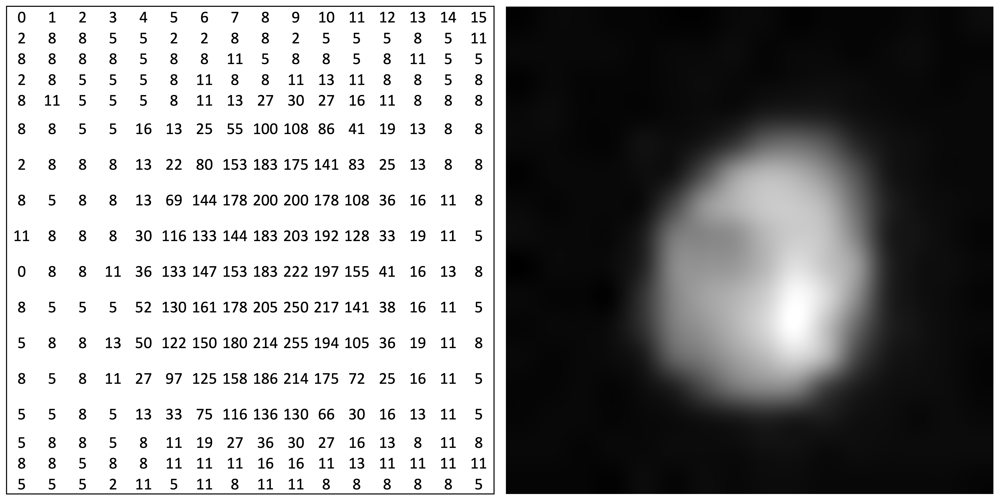

Digital Images as Data#
Learning Objectives#
By the end of this module, learners will be able to:
Understand what digital images are and how they are stored.
Distinguish between grayscale and RGB images.
Interpret image shape, data type, and number of channels.
Visualize pixel intensity distributions using histograms.
Apply Python to explore and manipulate image data.
What is a Digital Image? Pixels and Arrays#
A digital image is a numerical representation of a visual object.
The image is divided into pixels (short for picture elements), arranged in a grid (like a spreadsheet).
Each pixel contains a value representing intensity (brightness), or a set of values for color images.
In programming, this grid is stored as a 2D or 3D array, where each cell holds the pixel value.
Think of an image as a table: rows × columns of numbers.

Reading an Image#
There are many different libraries image data reading and writing. Most general purpose ones are Open-CV, Scikit-image, and Pillow. Other data-type specific libraries are tifffile, nd2 etc. For microscopy images, bioio is also a very powerful library for reading microscopy data and metadata.
Different libraries have slightly different ways of reading the images but at the end they produce an n-dimensional array with pixel values. Below, we will show how images are read using scikit-image.
from skimage.io import imread
import matplotlib.pyplot as plt
image = imread('data/nucleus_16x16.png')
plt.imshow(image, cmap='gray')
plt.axis('off')
plt.show()
print(image)
[[ 2 8 8 5 5 2 2 8 8 2 5 5 5 8 5 11]
[ 8 8 8 8 5 8 8 11 5 8 8 5 8 11 5 5]
[ 2 8 5 5 5 8 11 8 8 11 13 11 8 8 5 8]
[ 8 11 5 5 5 8 11 13 27 30 27 16 11 8 8 8]
[ 8 8 5 5 16 13 25 55 100 108 86 41 19 13 8 8]
[ 2 8 8 8 13 22 80 153 183 175 141 83 25 13 8 8]
[ 8 5 8 8 13 69 144 178 200 200 178 108 36 16 11 8]
[ 11 8 8 8 30 116 133 144 183 203 192 128 33 19 11 5]
[ 0 8 8 11 36 133 147 153 183 222 197 155 41 16 13 8]
[ 8 5 5 5 52 130 161 178 205 250 217 141 38 16 11 5]
[ 5 8 8 13 50 122 150 180 214 255 194 105 36 19 11 8]
[ 8 5 8 11 27 97 125 158 186 214 175 72 25 16 11 5]
[ 5 5 8 5 13 33 75 116 136 130 66 30 16 13 11 5]
[ 5 8 8 5 8 11 19 27 36 30 27 16 13 8 11 8]
[ 8 8 5 8 8 11 11 11 16 16 11 13 11 11 11 11]
[ 5 5 5 2 11 5 11 8 11 11 8 8 8 8 8 5]]
Exercise#
Read the
nuclei_64x64.pngimageCheck image shape and ensure
Display the image
Create a patch of 16x16
Display the patch and print
Show code cell content
from skimage.io import imread
import matplotlib.pyplot as plt
image = imread('data/nuclei_64x64.png')
plt.figure()
plt.imshow(image, cmap='gray')
plt.axis('off')
plt.show()
patch = image[16:32, 16:32]
plt.figure()
plt.imshow(patch, cmap='gray')
plt.axis('off')
plt.show()
print(patch)
[[ 9 9 12 9 12 9 9 12 15 15 18 28 56 123 173 176]
[ 6 12 9 12 12 15 12 12 9 18 25 66 158 192 199 199]
[ 6 9 6 12 9 15 9 12 15 22 47 135 186 195 249 243]
[ 9 9 9 12 9 12 12 18 18 34 101 183 192 221 237 233]
[ 12 9 15 9 15 9 12 15 18 50 151 211 202 218 214 199]
[ 12 6 12 12 9 15 15 12 28 75 176 202 202 227 221 189]
[ 9 9 9 9 9 12 9 18 25 104 186 192 211 233 233 221]
[ 12 9 12 9 9 15 9 18 34 107 192 199 218 237 240 230]
[ 9 12 9 9 15 15 15 22 28 88 176 202 218 237 221 214]
[ 12 6 9 9 12 12 15 9 25 47 142 218 252 230 214 224]
[ 12 6 12 9 6 15 9 15 22 28 97 186 221 224 230 221]
[ 12 15 15 9 15 9 9 12 18 25 56 104 180 233 237 214]
[ 12 9 9 12 9 12 12 15 18 34 53 63 132 202 218 214]
[ 12 9 9 12 12 12 12 15 22 41 44 50 69 126 183 186]
[ 12 12 12 6 12 9 12 15 18 37 41 44 44 53 82 101]
[ 12 9 9 12 12 15 12 12 15 25 34 28 41 25 22 28]]
Grayscale vs RGB#
Grayscale images: Each pixel is represented by a single number (intensity from black to white, typically 0–255).
RGB images: Each pixel is a combination of three values – Red, Green, and Blue (3 channels).
RGB images have shape = (height, width, 3) while grayscale images are (height, width).
# read image as cxy and save image as 8-bit xyc
from skimage import io
import numpy as np
image = io.imread('data/cells.tif')
image = image.transpose(2, 1, 0)
image[:,:,0] = (255*((image[:,:,0]-image[:,:,0].min())/(image[:,:,0].max()-image[:,:,0].min()))).astype(np.uint8)
image[:,:,1] = (255*((image[:,:,1]-image[:,:,1].min())/(image[:,:,1].max()-image[:,:,1].min()))).astype(np.uint8)
io.imsave('data/cells_8bit.tif', image, check_contrast=False)
image[:,:,0].max()-image[:,:,0].min()
np.uint16(255)
from skimage import io
# Load RGB image
rgb_image = imread('data/cells_8bit.tif')
print("RGB Image shape:", rgb_image.shape)
# Show all three channels
fig, axs = plt.subplots(1, 4, figsize=(12, 4))
# axs[0].imshow(rgb_image)
axs[0].set_title("Original RGB")
axs[1].imshow(rgb_image[:, :, 0], cmap='Reds')
axs[1].set_title("Red Channel")
axs[2].imshow(rgb_image[:, :, 1], cmap='Greens')
axs[2].set_title("Green Channel")
# axs[3].imshow(rgb_image[:, :, 2], cmap='Blues')
axs[3].set_title("Blue Channel")
for ax in axs:
ax.axis('off')
plt.tight_layout()
plt.show()
RGB Image shape: (256, 256, 2)
from skimage import io
# Load RGB image
rgb_image = imread('data/cells.tif')
print("RGB Image shape:", rgb_image.shape)
# Show all three channels
fig, axs = plt.subplots(1, 4, figsize=(12, 4))
axs[0].imshow(rgb_image)
axs[0].set_title("Original RGB")
axs[1].imshow(rgb_image[0, :, :], cmap='Reds')
axs[1].set_title("Red Channel")
axs[2].imshow(rgb_image[1, :, :], cmap='Greens')
axs[2].set_title("Green Channel")
axs[3].imshow(rgb_image[2, :, :], cmap='Blues')
axs[3].set_title("Blue Channel")
for ax in axs:
ax.axis('off')
plt.tight_layout()
plt.show()
RGB Image shape: (2, 256, 256)
---------------------------------------------------------------------------
TypeError Traceback (most recent call last)
Cell In[6], line 11
8 # Show all three channels
9 fig, axs = plt.subplots(1, 4, figsize=(12, 4))
---> 11 axs[0].imshow(rgb_image)
12 axs[0].set_title("Original RGB")
13 axs[1].imshow(rgb_image[0, :, :], cmap='Reds')
File ~/anaconda3/envs/gbi-python-env/lib/python3.13/site-packages/matplotlib/__init__.py:1521, in _preprocess_data.<locals>.inner(ax, data, *args, **kwargs)
1518 @functools.wraps(func)
1519 def inner(ax, *args, data=None, **kwargs):
1520 if data is None:
-> 1521 return func(
1522 ax,
1523 *map(cbook.sanitize_sequence, args),
1524 **{k: cbook.sanitize_sequence(v) for k, v in kwargs.items()})
1526 bound = new_sig.bind(ax, *args, **kwargs)
1527 auto_label = (bound.arguments.get(label_namer)
1528 or bound.kwargs.get(label_namer))
File ~/anaconda3/envs/gbi-python-env/lib/python3.13/site-packages/matplotlib/axes/_axes.py:5979, in Axes.imshow(self, X, cmap, norm, aspect, interpolation, alpha, vmin, vmax, colorizer, origin, extent, interpolation_stage, filternorm, filterrad, resample, url, **kwargs)
5976 if aspect is not None:
5977 self.set_aspect(aspect)
-> 5979 im.set_data(X)
5980 im.set_alpha(alpha)
5981 if im.get_clip_path() is None:
5982 # image does not already have clipping set, clip to Axes patch
File ~/anaconda3/envs/gbi-python-env/lib/python3.13/site-packages/matplotlib/image.py:685, in _ImageBase.set_data(self, A)
683 if isinstance(A, PIL.Image.Image):
684 A = pil_to_array(A) # Needed e.g. to apply png palette.
--> 685 self._A = self._normalize_image_array(A)
686 self._imcache = None
687 self.stale = True
File ~/anaconda3/envs/gbi-python-env/lib/python3.13/site-packages/matplotlib/image.py:653, in _ImageBase._normalize_image_array(A)
651 A = A.squeeze(-1) # If just (M, N, 1), assume scalar and apply colormap.
652 if not (A.ndim == 2 or A.ndim == 3 and A.shape[-1] in [3, 4]):
--> 653 raise TypeError(f"Invalid shape {A.shape} for image data")
654 if A.ndim == 3:
655 # If the input data has values outside the valid range (after
656 # normalisation), we issue a warning and then clip X to the bounds
657 # - otherwise casting wraps extreme values, hiding outliers and
658 # making reliable interpretation impossible.
659 high = 255 if np.issubdtype(A.dtype, np.integer) else 1
TypeError: Invalid shape (2, 256, 256) for image data
Exercise: Convert RGB to grayscale#
Use
skimage.color.rgb2gray()to convert the astronaut image to grayscale.Plot the grayscale image and its histogram.
Image Shape, Data Type, Channels#
shape: tells us the size and dimensionality of the image. e.g., (512, 512) → grayscale; (512, 512, 3) → RGB
dtype: data type of pixel values (e.g., uint8 for 0–255, float64 for 0–1).
Channels:
Grayscale → 1 channel
RGB → 3 channels
Why it matters: Shape and dtype affect how we process and visualize the image.
print("Data type of grayscale image:", image.dtype)
print("Min, Max intensity:", image.min(), image.max())
# Normalize to float
image_float = image / 255.0
print("New dtype:", image_float.dtype)
print("New range:", image_float.min(), image_float.max())
Data type of grayscale image: uint8
Min, Max intensity: 1 252
New dtype: float64
New range: 0.00392156862745098 0.9882352941176471
Plot Pixel Intensity Histogram#
A histogram shows how often each pixel value occurs.
Useful to:
Understand image contrast
Detect under/overexposed images
Plan preprocessing steps like thresholding or normalization
# Plot histogram of grayscale image
plt.hist(image.ravel(), bins=256, range=(0, 255), color='gray')
plt.title("Pixel Intensity Histogram")
plt.xlabel("Pixel Value")
plt.ylabel("Frequency")
plt.show()
Exercise: Image statistics#
For any grayscale image:
Compute mean, median, min, max pixel values.
Plot histogram.
Mini Project: Compare Microscopy Image Channels#
Goal: Load a microscopy RGB image and analyze individual channels for intensity distribution.
Tasks
Load an RGB image (can use data.cells3d() and extract a slice).
Display all three channels separately.
Plot the histogram for each channel.
Compare which channel has the highest contrast or dynamic range.
from skimage.data import cells3d
from skimage.color import rgb2gray
cells = cells3d()
z_slice = cells[30, :, :, :] # Get a slice
# Plot channels
fig, axes = plt.subplots(1, 3, figsize=(12, 4))
for i, color in enumerate(['Red', 'Green', 'Blue']):
axes[i].imshow(z_slice[:, :, i], cmap=color.lower())
axes[i].set_title(f'{color} Channel')
axes[i].axis('off')
plt.tight_layout()
plt.show()
---------------------------------------------------------------------------
ModuleNotFoundError Traceback (most recent call last)
Cell In[5], line 4
1 from skimage.data import cells3d
2 from skimage.color import rgb2gray
----> 4 cells = cells3d()
5 z_slice = cells[30, :, :, :] # Get a slice
7 # Plot channels
File ~/anaconda3/envs/gbi-python-env/lib/python3.13/site-packages/skimage/data/_fetchers.py:633, in cells3d()
607 def cells3d():
608 """3D fluorescence microscopy image of cells.
609
610 The returned data is a 3D multichannel array with dimensions provided in
(...) 630 * After rescaling the voxel size is ``(0.29 0.26 0.26)``.
631 """
--> 633 return _load("data/cells3d.tif")
File ~/anaconda3/envs/gbi-python-env/lib/python3.13/site-packages/skimage/data/_fetchers.py:336, in _load(f, as_gray)
332 # importing io is quite slow since it scans all the backends
333 # we lazy import it here
334 from ..io import imread
--> 336 return imread(_fetch(f), as_gray=as_gray)
File ~/anaconda3/envs/gbi-python-env/lib/python3.13/site-packages/skimage/data/_fetchers.py:218, in _fetch(data_filename)
216 if _image_fetcher is None:
217 _skip_pytest_case_requiring_pooch(data_filename)
--> 218 raise ModuleNotFoundError(
219 "The requested file is part of the scikit-image distribution, "
220 "but requires the installation of an optional dependency, pooch. "
221 "To install pooch, use your preferred python package manager. "
222 "Follow installation instruction found at "
223 "https://scikit-image.org/docs/stable/user_guide/install.html"
224 )
225 # Download the data with pooch which caches it automatically
226 _ensure_cache_dir(target_dir=cache_dir)
ModuleNotFoundError: The requested file is part of the scikit-image distribution, but requires the installation of an optional dependency, pooch. To install pooch, use your preferred python package manager. Follow installation instruction found at https://scikit-image.org/docs/stable/user_guide/install.html
Module Summary#
Concept |
Description |
|---|---|
Digital Image |
Numeric grid of pixels stored in arrays |
Grayscale |
Single channel; values from 0 (black) to 255 (white) |
RGB |
Three channels – Red, Green, Blue |
Image Shape |
Dimensions of the array (height, width, [channels]) |
Data Type |
Type of pixel value, e.g., uint8, float |
Histogram |
Graph of pixel intensity distribution |
Hands-on Tools |
|